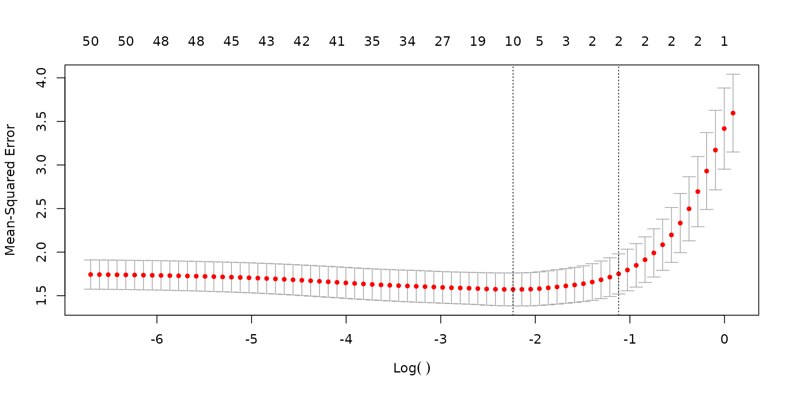
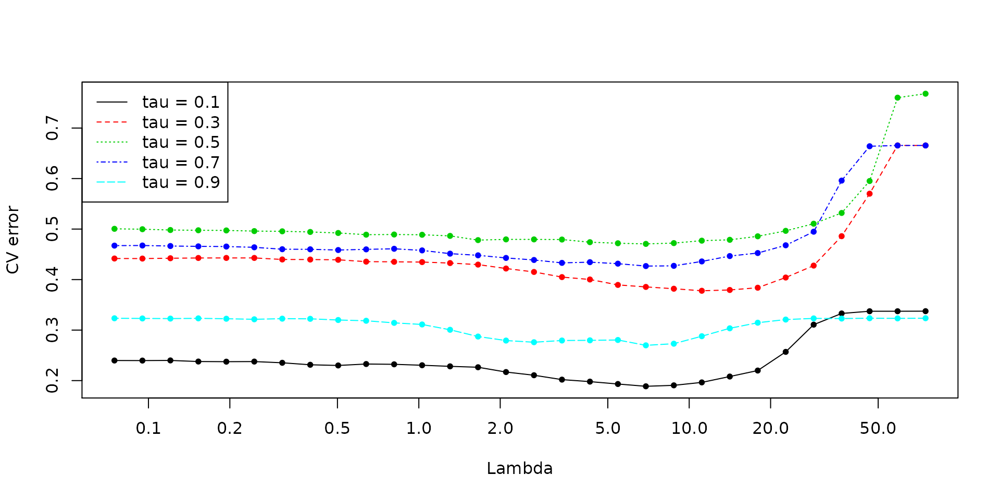
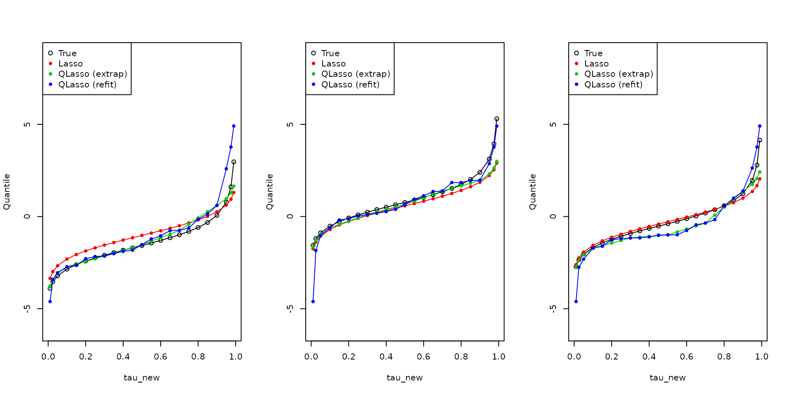
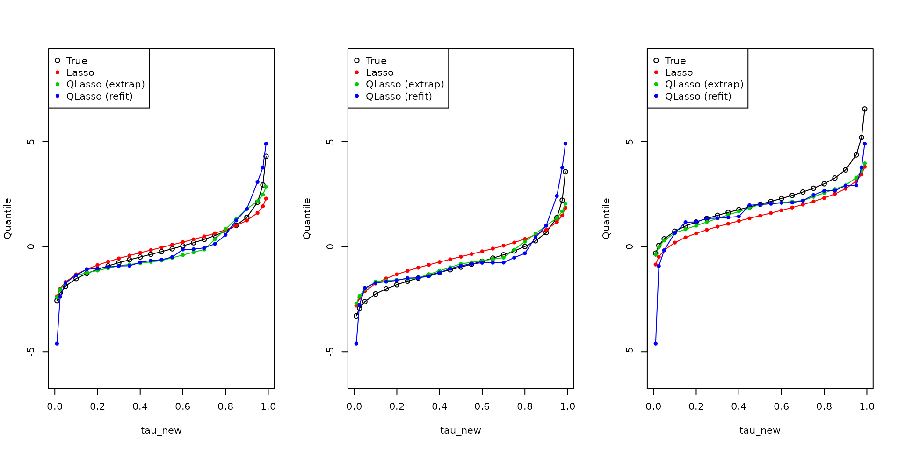
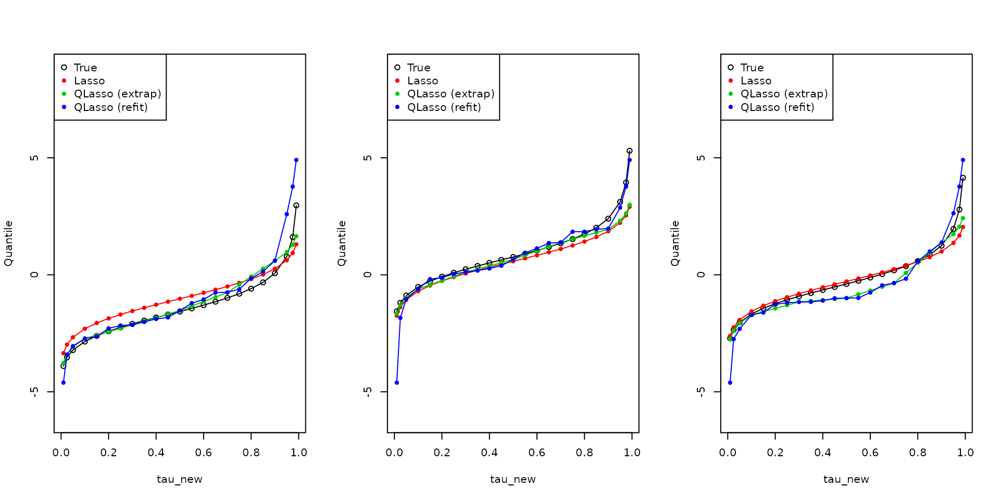
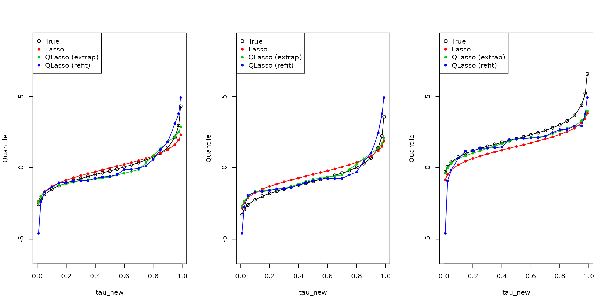

1. Quantile Stacking
stacking_example.Rmd\[ \newcommand{\argmin}{\mathop{\mathrm{argmin}}} \newcommand{\argmax}{\mathop{\mathrm{argmax}}} \newcommand{\minimize}{\mathop{\mathrm{minimize}}} \newcommand{\st}{\mathop{\mathrm{subject\,\,to}}} \]
Problem setup
Consider the problem \[\begin{alignat*}{2} &\minimize_\alpha \quad && \sum_{k=1}^r \sum_{i=1}^n w_i \psi_{\tau_k} \bigg(y_i - \sum_{j=1}^p \alpha_j q_{ijk} \bigg) \\ &\st && \sum_{j=1}^p \alpha_j = 1, \; \alpha_j \geq 0. \end{alignat*}\] Here \(\tau_k\), \(k=1,\ldots,r\) is a set of quantile levels, assumed to be in increasing order and each \(q_{ijk}\) is an estimate of the quantile of \(y_i\) at the level \(\tau_k\), from ensemble component member \(j\) Also, \[ \psi_\tau(v) = \max\{\tau v, (\tau-1) v)\}, \] often called the “pinball” or “tilted \(\ell_1\)” loss, for a quantile level \(\tau \in (0,1)\), and \(w_i\), \(i=1,\ldots,n\) are observation weights. A more flexible approach would be to estimate a separate ensemble weight \(\alpha_{jk}\) per component method \(j\) and quantile level \(k\): \[\begin{alignat*}{2} &\minimize_\alpha \quad && \sum_{k=1}^r \sum_{i=1}^n w_i \psi_{\tau_k} \bigg(y_i - \sum_{j=1}^p \alpha_{jk} q_{ijk} \bigg) \\ &\st && \sum_{j=1}^p \alpha_{jk} = 1, \; \alpha_{jk} \geq 0. \end{alignat*}\] As a form of regularization, we can additionally incorporate noncrossing constraints into the above optimization, which take the form: \[ \alpha_{\bullet,k}^T q \leq \alpha_{\bullet,k+1}^T q, \; q \in \mathcal{Q}. \] where \(\mathcal{Q}\) is some collection of points over which to enforce the constraints (for example, the training points, or the training points along with some unlabeled test points).
LP reformulation
Here are the LP formulations of the two quantile stacking approaches. The standard one: \[\begin{alignat*}{2} &\minimize_{\alpha,u} \quad && \sum_{i=1}^n w_i \sum_{k=1}^r u_{ik} \\ &\st \quad && u_{ik} \geq \tau_k \bigg(y_i - \sum_{j=1}^p \alpha_j q_{ijk}\bigg), \\ &&& u_{ik} \geq (\tau_k-1)\bigg(y_i - \sum_{j=1}^p \alpha_j q_{ijk}\bigg), \\ &&& \sum_{j=1}^p \alpha_j = 1 \; \alpha_j \geq 0. \end{alignat*}\] The flexible one: \[\begin{alignat*}{2} &\minimize_{\alpha,u} \quad && \sum_{i=1}^n w_i \sum_{k=1}^r u_{ik} \\ &\st \quad && u_{ik} \geq \tau_k \bigg(y_i - \sum_{j=1}^p \alpha_{jk} q_{ijk}\bigg), \\ &&& u_{ik} \geq (\tau_k-1)\bigg(y_i - \sum_{j=1}^p \alpha_{jk} q_{ijk}\bigg), \\ &&& \sum_{j=1}^p \alpha_{jk} = 1 \; \alpha_{jk} \geq 0, \\ &&& \alpha_{\bullet,k}^T q \leq \alpha_{\bullet,k+1}^T q, \; q \in \mathcal{Q}. \end{alignat*}\]
Heavy-tailed example
We give a simple example of regression data with a skewed error distribution: Gaussian for the left tail, and t-distributed (with 3 degrees of freedom) for the right tail. We use three methods to estimate the conditional quantile function, at 23 quantile levels:
- lasso, tuned by cross-validation (CV), plus Gaussian tails;
- quantile lasso at 5 quantile levels, also tuned by CV, then extrapolated out to the full set of 23;
- quantile lasso “refit” (starting from the previous CV-tuned model) to the full 23 quantile levels.
As we can see from the plots below, the first method often generally does poorly, both in the tails and also in the middle of the distribution (because it models the conditional mean, not the conditional median, and these are quite different due to skewness); the second method often does better in the left tail but underestimates quantiles in the extreme right tail (because it extrapolates using a Gaussian quantile function); and the third method often does better in the right tail and underestimates quantiles the extreme left tail. We can see that flexible stacking roughly learns how to account for these complementary strengths/weaknesses, and sets ensembles weights accordingly.
## Loading required package: Matrix## Loaded glmnet 4.0-2
library(quantgen)
set.seed(33)
n = 300
p = 50
x = matrix(rnorm(n*p), n, p)
mu = function(x) x[1] + x[2]
e = ifelse(runif(n) < 0.5, -abs(rnorm(n)), abs(rt(n, df=3)))
y = apply(x, 1, mu) + e
# Histogram of error distribution: skewed, and heavy-tailed on one side
hist(e, breaks=40, col="lightblue", main="Error distribution", prob=TRUE)
lines(density(e), lwd=2)
# Run CV for usual lasso, and quantile lasso
tau = c(0.1, 0.3, 0.5, 0.7, 0.9)
glmnet_obj = cv.glmnet(x, y, nfolds=5)
quant_obj = cv_quantile_lasso(x, y, tau=tau, nlambda=30, nfolds=5, lp_solver="gurobi", verbose=TRUE, sort=TRUE)## Warning in get_lambda_max(x, y, d, weights, lp_solver): gurobi R package not
## installed, using Rglpk instead.## CV fold 1 ...## Warning in quantile_genlasso_lp(x = x, y = y, d = d, tau = tau, lambda =
## lambda, : gurobi R package not installed, using Rglpk instead.## Problems solved (of 150): 5 ... 10 ... 15 ... 20 ... 25 ... 30 ... 35 ... 40 ... 45 ... 50 ... 55 ... 60 ... 65 ... 70 ... 75 ... 80 ... 85 ... 90 ... 95 ... 100 ... 105 ... 110 ... 115 ... 120 ... 125 ... 130 ... 135 ... 140 ... 145 ... 150 ...
## CV fold 2 ...## Warning in quantile_genlasso_lp(x = x, y = y, d = d, tau = tau, lambda =
## lambda, : gurobi R package not installed, using Rglpk instead.## Problems solved (of 150): 5 ... 10 ... 15 ... 20 ... 25 ... 30 ... 35 ... 40 ... 45 ... 50 ... 55 ... 60 ... 65 ... 70 ... 75 ... 80 ... 85 ... 90 ... 95 ... 100 ... 105 ... 110 ... 115 ... 120 ... 125 ... 130 ... 135 ... 140 ... 145 ... 150 ...
## CV fold 3 ...## Warning in quantile_genlasso_lp(x = x, y = y, d = d, tau = tau, lambda =
## lambda, : gurobi R package not installed, using Rglpk instead.## Problems solved (of 150): 5 ... 10 ... 15 ... 20 ... 25 ... 30 ... 35 ... 40 ... 45 ... 50 ... 55 ... 60 ... 65 ... 70 ... 75 ... 80 ... 85 ... 90 ... 95 ... 100 ... 105 ... 110 ... 115 ... 120 ... 125 ... 130 ... 135 ... 140 ... 145 ... 150 ...
## CV fold 4 ...## Warning in quantile_genlasso_lp(x = x, y = y, d = d, tau = tau, lambda =
## lambda, : gurobi R package not installed, using Rglpk instead.## Problems solved (of 150): 5 ... 10 ... 15 ... 20 ... 25 ... 30 ... 35 ... 40 ... 45 ... 50 ... 55 ... 60 ... 65 ... 70 ... 75 ... 80 ... 85 ... 90 ... 95 ... 100 ... 105 ... 110 ... 115 ... 120 ... 125 ... 130 ... 135 ... 140 ... 145 ... 150 ...
## CV fold 5 ...## Warning in quantile_genlasso_lp(x = x, y = y, d = d, tau = tau, lambda =
## lambda, : gurobi R package not installed, using Rglpk instead.## Problems solved (of 150): 5 ... 10 ... 15 ... 20 ... 25 ... 30 ... 35 ... 40 ... 45 ... 50 ... 55 ... 60 ... 65 ... 70 ... 75 ... 80 ... 85 ... 90 ... 95 ... 100 ... 105 ... 110 ... 115 ... 120 ... 125 ... 130 ... 135 ... 140 ... 145 ... 150 ...
## Computing CV errors and optimum lambdas ...
## Refitting on full training set with optimum lambdas ...## Warning in quantile_genlasso_lp(x = x, y = y, d = d, tau = tau, lambda =
## lambda, : gurobi R package not installed, using Rglpk instead.## Problems solved (of 5): 1 ... 2 ... 3 ... 4 ... 5 ...
plot(glmnet_obj)
plot(quant_obj)
# Refit quantile lasso at more quantile levels
tau_new = c(0.01, 0.025, seq(0.05, 0.95, by=0.05), 0.975, 0.99)
refit_obj = refit_quantile_lasso(quant_obj, x, y, tau_new, lp_solver="gurobi", verbose=TRUE)## Warning in quantile_genlasso_lp(x = x, y = y, d = d, tau = tau, lambda =
## lambda, : gurobi R package not installed, using Rglpk instead.## Problems solved (of 23): 5 ... 10 ... 15 ... 20 ...
# Generate test data
n0 = 300
x0 = matrix(rnorm(n0*p), n0, p)
e0 = ifelse(runif(n0) < 0.5, -abs(rnorm(n0)), abs(rt(n0, df=3)))
y0 = apply(x0, 1, mu) + e0
# Predicted quantiles at test points
qtrue = outer(apply(x0, 1, mu), ifelse(tau_new < 0.5, qnorm(tau_new), qt(tau_new, df=3)), "+")
qpred1 = outer(as.numeric(predict(glmnet_obj, x0)), qnorm(tau_new), "+")
qpred2_init = predict(quant_obj, x0, sort=TRUE)
qpred2 = quantile_extrapolate(tau, qpred2_init, tau_new, qfun_left=qnorm, qfun_right=qnorm)
qpred3 = predict(refit_obj, x0, sort=TRUE)
par(mfrow=c(1,3))
for (i in 1:9) {
plot(tau_new, qtrue[i,], type="o", ylim=range(qtrue, qpred1, qpred2, qpred3), ylab="Quantile")
lines(tau_new, qpred1[i,], col=2, pch=20, type="o")
lines(tau_new, qpred2[i,], col=3, pch=20, type="o")
lines(tau_new, qpred3[i,], col=4, pch=20, type="o")
legend("topleft", legend=c("True", "Lasso", "QLasso (extrap)", "QLasso (refit)"),
col=1:4, pch=c(21,20,20,20))
} 

# Construct array of predicted quantiles
qarr = combine_into_array(qpred1, qpred2, qpred3)
# Standard stacking: one weight per ensemble member
st_obj1 = quantile_ensemble(qarr, y0, tau_new, lp_solver="gurobi", verbose=TRUE)## Warning in quantile_ensemble_stand(qarr = qarr, y = y, tau = tau, weights =
## weights, : gurobi R package not installed, using Rglpk instead.## GLPK Simplex Optimizer, v4.65
## 13801 rows, 6903 columns, 55203 non-zeros
## 0: obj = 0.000000000e+00 inf = 5.319e+03 (6901)
## 2970: obj = 1.143953299e+02 inf = 2.650e+03 (5369) 29
## 7410: obj = 1.467046621e+03 inf = 9.004e+02 (1818) 18
## 9275: obj = 2.371596748e+03 inf = 2.498e-16 (0) 1
## * 9477: obj = 2.346893095e+03 inf = 0.000e+00 (0) 2
## OPTIMAL LP SOLUTION FOUND
coef(st_obj1)## [1] 0.2376480 0.4490881 0.3132639
# Flexible stacking: one weight per ensemble member, per quantile level
st_obj2 = quantile_ensemble(qarr, y0, tau_new, tau_groups=1:length(tau_new), lp_solver="gurobi", verbose=TRUE)## Warning in quantile_ensemble_flex(qarr = qarr, y = y, tau = tau, weights =
## weights, : gurobi R package not installed, using Rglpk instead.## GLPK Simplex Optimizer, v4.65
## 20423 rows, 6969 columns, 94869 non-zeros
## 0: obj = 0.000000000e+00 inf = 5.341e+03 (6923)
## 3075: obj = 1.061561139e+02 inf = 2.750e+03 (5422) 30
## 6456: obj = 7.742801205e+02 inf = 1.577e+03 (3011) 19
## 9503: obj = 2.349482324e+03 inf = 2.082e-17 (0) 1
## * 9726: obj = 2.323830556e+03 inf = 4.862e-16 (0) 2
## OPTIMAL LP SOLUTION FOUND
coef(st_obj2)## 0.01 0.025 0.05 0.1 0.15 0.2 0.25 0.3
## [1,] 0 0.0000000 0.00000000 0 0.00000000 0.0000000 0.0000000 0.0000000
## [2,] 1 0.8437408 0.95556582 0 0.97295954 0.8980185 0.2906669 0.6943572
## [3,] 0 0.1562592 0.04443418 1 0.02704046 0.1019815 0.7093331 0.3056428
## 0.35 0.4 0.45 0.5 0.55 0.6 0.65 0.7
## [1,] 0 0.01373238 0.16248820 0.337978 0.3864073 0.4350753 0.4756392 0.524623
## [2,] 1 0.87206790 0.74953151 0.662022 0.6135927 0.5649247 0.3079200 0.000000
## [3,] 0 0.11419972 0.08798029 0.000000 0.0000000 0.0000000 0.2164407 0.475377
## 0.75 0.8 0.85 0.9 0.95 0.975 0.99
## [1,] 0.61574072 0.73172946 0.8358845 0.6183578 0.4926320 0.34035712 0.0000000
## [2,] 0.01141027 0.17477463 0.1641155 0.3816422 0.1626284 0.09585179 0.2818898
## [3,] 0.37284901 0.09349591 0.0000000 0.0000000 0.3447397 0.56379108 0.7181102
# Somewhere in the middle: group the extreme 3 quantiles together on either tail, and the middle
st_obj3 = quantile_ensemble(qarr, y0, tau_new, tau_groups=c(rep(1,3),rep(2,17),rep(3,3)), lp_solver="gurobi", verbose=TRUE)## Warning in quantile_ensemble_flex(qarr = qarr, y = y, tau = tau, weights =
## weights, : gurobi R package not installed, using Rglpk instead.## GLPK Simplex Optimizer, v4.65
## 20483 rows, 6969 columns, 94989 non-zeros
## 0: obj = 0.000000000e+00 inf = 5.341e+03 (6923)
## 3163: obj = 1.196353928e+02 inf = 2.626e+03 (5343) 30
## 7253: obj = 1.282498071e+03 inf = 1.075e+03 (2099) 18
## 9475: obj = 2.348034414e+03 inf = 4.441e-16 (0) 1
## * 9603: obj = 2.340443662e+03 inf = 8.674e-17 (0) 1
## OPTIMAL LP SOLUTION FOUND
coef(st_obj3)## 0.01 0.025 0.05 0.1 0.15 0.2 0.25 0.3
## [1,] 0 0 0 0.29225923 0.29225923 0.29225923 0.29225923 0.29225923
## [2,] 1 1 1 0.65371701 0.65371701 0.65371701 0.65371701 0.65371701
## [3,] 0 0 0 0.05402376 0.05402376 0.05402376 0.05402376 0.05402376
## 0.35 0.4 0.45 0.5 0.55 0.6
## [1,] 0.29225923 0.29225923 0.29225923 0.29225923 0.29225923 0.29225923
## [2,] 0.65371701 0.65371701 0.65371701 0.65371701 0.65371701 0.65371701
## [3,] 0.05402376 0.05402376 0.05402376 0.05402376 0.05402376 0.05402376
## 0.65 0.7 0.75 0.8 0.85 0.9
## [1,] 0.29225923 0.29225923 0.29225923 0.29225923 0.29225923 0.29225923
## [2,] 0.65371701 0.65371701 0.65371701 0.65371701 0.65371701 0.65371701
## [3,] 0.05402376 0.05402376 0.05402376 0.05402376 0.05402376 0.05402376
## 0.95 0.975 0.99
## [1,] 0.3393072 0.3393072 0.3393072
## [2,] 0.1064720 0.1064720 0.1064720
## [3,] 0.5542208 0.5542208 0.5542208## [,1] [,2] [,3] [,4] [,5] [,6]
## [1,] -4.474541 -3.9876114 -3.7088311 -3.44998883 -3.2711912 -3.0973061
## [2,] -3.230022 -2.3104650 -2.0316313 -1.57821729 -1.4025831 -1.1669122
## [3,] -2.225690 -0.8956903 -0.4702212 -0.08202098 0.1691050 0.3689626
## [4,] -3.932332 -3.3073106 -2.9760859 -2.62344092 -2.4752225 -2.2523663
## [5,] -2.601196 -1.4830434 -1.0134407 -0.63022553 -0.3581074 -0.2117489
## [6,] -3.302160 -2.4687303 -2.1151132 -1.67806268 -1.5264068 -1.3073644
## [,7] [,8] [,9] [,10] [,11] [,12]
## [1,] -2.95789260 -2.8385920 -2.7197387 -2.6075791 -2.5054108 -2.4306348
## [2,] -1.00556097 -0.8721617 -0.7257066 -0.5590407 -0.2825371 -0.1457747
## [3,] 0.50994406 0.6504214 0.7591970 0.9382024 1.0811788 1.2207625
## [4,] -2.11014434 -2.0011621 -1.8590328 -1.7185050 -1.5990054 -1.4073959
## [5,] -0.04059177 0.1000578 0.2140608 0.3338671 0.4619087 0.6354632
## [6,] -1.18607586 -1.0764812 -1.0243284 -0.9574878 -0.8774877 -0.8267323
## [,13] [,14] [,15] [,16] [,17] [,18]
## [1,] -2.26608324 -2.1027369 -1.9245957 -1.7973691 -1.48232698 -1.0657835
## [2,] -0.02829525 0.1135286 0.2207583 0.3639065 0.65896398 0.9543413
## [3,] 1.27240516 1.3200017 1.3727389 1.4143226 1.51473790 1.6674359
## [4,] -1.19385100 -1.0263593 -0.8172265 -0.6948190 -0.46397660 -0.1256845
## [5,] 0.83643630 1.0083896 1.1926519 1.3159833 1.55866990 1.6623625
## [6,] -0.72265706 -0.5476070 -0.3473897 -0.2126194 0.07610089 0.5421323
## [,19] [,20] [,21] [,22] [,23]
## [1,] -0.3329086 0.2081068 1.169289 1.737891 2.345617
## [2,] 1.3962888 1.8407283 2.424430 2.842325 3.450051
## [3,] 1.8603536 2.0149278 2.461893 3.044062 3.651788
## [4,] 0.1639948 0.5224099 1.393795 1.980248 2.587975
## [5,] 1.8036516 1.9340900 2.464304 2.962817 3.570543
## [6,] 0.9150542 1.2872275 1.929478 2.502685 3.110411## [,1] [,2] [,3] [,4] [,5] [,6]
## [1,] -4.668836 -4.2329520 -3.9727317 -3.62595241 -3.4833676 -3.3324232
## [2,] -2.669572 -2.3302928 -2.0009311 -1.62543535 -1.4541247 -1.2661464
## [3,] -1.098886 -0.8003081 -0.4210199 -0.05497916 0.1309315 0.3302381
## [4,] -3.768479 -3.4044024 -3.0853550 -2.72259227 -2.5793133 -2.4177098
## [5,] -1.652297 -1.3729146 -0.9736289 -0.60751748 -0.4204562 -0.2339474
## [6,] -2.757014 -2.4470321 -2.0860964 -1.71329089 -1.5758140 -1.4183473
## [,7] [,8] [,9] [,10] [,11] [,12]
## [1,] -3.146609897 -3.0599915 -2.9670769 -2.8511103 -2.6030915 -2.3218400
## [2,] -1.031307120 -0.9353078 -0.7449985 -0.5676589 -0.3324399 -0.1643112
## [3,] 0.564018313 0.6697608 0.8250275 0.9737605 1.1060755 1.2306525
## [4,] -2.203019754 -2.1423572 -1.9885098 -1.8329597 -1.6069665 -1.3569152
## [5,] 0.007743747 0.1143904 0.2490994 0.3698799 0.4963285 0.6279640
## [6,] -1.227747653 -1.1599398 -1.1183954 -1.0732501 -0.9319938 -0.7552401
## [,13] [,14] [,15] [,16] [,17] [,18]
## [1,] -2.11842051 -1.91786591 -1.7041087 -1.52716236 -1.3297420 -0.8553879
## [2,] -0.03256316 0.09932881 0.2267782 0.36966570 0.5501175 0.7943231
## [3,] 1.27829137 1.33777760 1.4118875 1.50080051 1.6304849 1.8540222
## [4,] -1.16633826 -0.98119284 -0.7612456 -0.61836383 -0.4493808 -0.1610815
## [5,] 0.78475654 0.93689940 1.1213602 1.23576452 1.4754809 1.5023392
## [6,] -0.57368051 -0.39446315 -0.2070918 -0.04190009 0.1794042 0.5514688
## [,19] [,20] [,21] [,22] [,23]
## [1,] -0.51120410 -0.05712779 1.052180 2.347845 3.923751
## [2,] 1.01335102 1.48886993 2.211073 3.006081 4.399393
## [3,] 2.07854458 2.18413225 2.614808 3.413492 4.338369
## [4,] 0.05373917 0.39040290 1.356169 2.567602 3.989337
## [5,] 1.64605303 1.89260489 2.460215 3.241399 4.367074
## [6,] 0.78445340 1.14264687 1.860931 2.893530 4.206834## [,1] [,2] [,3] [,4] [,5] [,6]
## [1,] -4.668836 -4.3024520 -3.9873417 -3.40955258 -3.2355893 -3.0751140
## [2,] -2.669572 -2.3031884 -1.9880781 -1.56736663 -1.3760606 -1.1870416
## [3,] -1.098886 -0.7325025 -0.4173921 -0.08823517 0.1210763 0.3089057
## [4,] -3.768479 -3.4020949 -3.0869845 -2.60065605 -2.4299099 -2.2589328
## [5,] -1.652297 -1.2859129 -0.9708026 -0.63544382 -0.4229202 -0.2447250
## [6,] -2.757014 -2.3906300 -2.0755196 -1.66996727 -1.5023904 -1.3358331
## [,7] [,8] [,9] [,10] [,11] [,12]
## [1,] -2.92753884 -2.7877146 -2.6787265 -2.5726785 -2.4694310 -2.3714160
## [2,] -1.01779483 -0.8576508 -0.6877771 -0.5162036 -0.3267655 -0.1619350
## [3,] 0.47962607 0.6459772 0.7891590 0.9426666 1.0888833 1.2340064
## [4,] -2.10881689 -1.9687157 -1.8205997 -1.6745458 -1.5331956 -1.3799184
## [5,] -0.06920866 0.0967642 0.2290007 0.3604522 0.4922466 0.6313812
## [6,] -1.19308941 -1.0566447 -0.9892064 -0.9210209 -0.8516434 -0.7878179
## [,13] [,14] [,15] [,16] [,17] [,18]
## [1,] -2.21534056 -2.0589643 -1.8989592 -1.7459488 -1.3087561 -0.8497766
## [2,] -0.03328163 0.1000788 0.2285506 0.3650025 0.6987387 1.0368123
## [3,] 1.28172430 1.3292532 1.3787459 1.4281010 1.5556530 1.6965038
## [4,] -1.20101906 -1.0295531 -0.8498286 -0.6832745 -0.4092050 -0.1123230
## [5,] 0.80266774 0.9694583 1.1394491 1.3007177 1.4613916 1.6023776
## [6,] -0.64579134 -0.4910162 -0.3308234 -0.1801316 0.1568981 0.5287881
## [,19] [,20] [,21] [,22] [,23]
## [1,] -0.3292890 0.1696501 1.558964 2.322547 3.115909
## [2,] 1.4071181 1.7901144 2.500216 2.997171 3.790533
## [3,] 1.8512461 2.0115042 2.613377 3.400963 4.194325
## [4,] 0.1831310 0.5037076 1.749000 2.544165 3.337528
## [5,] 1.7568028 1.9219876 2.590929 3.230512 4.023875
## [6,] 0.8915765 1.2662580 2.105782 2.877511 3.670874